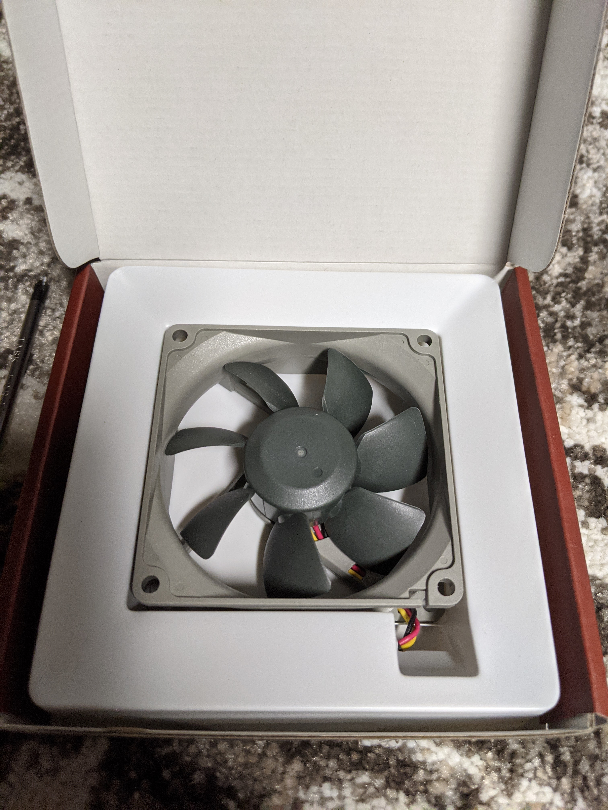
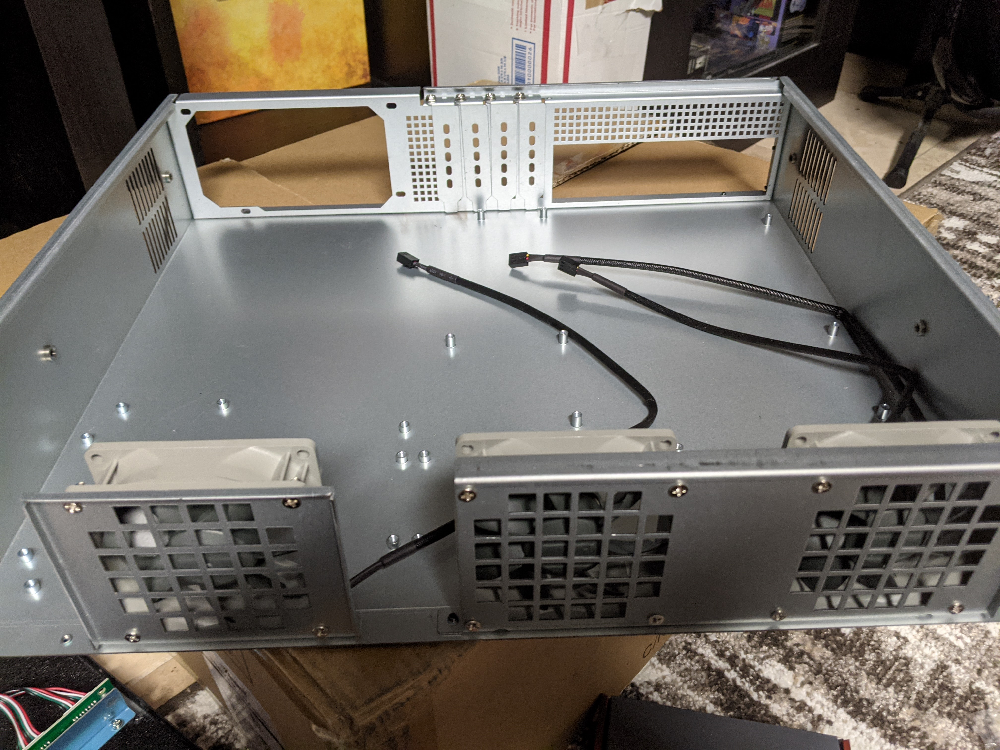
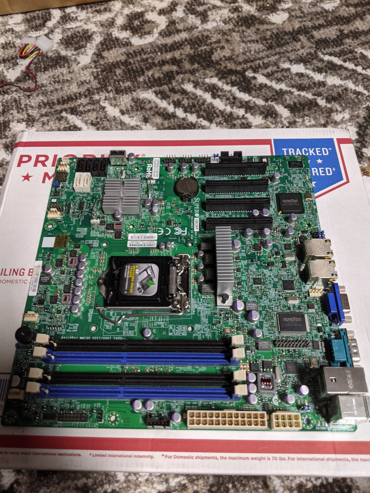
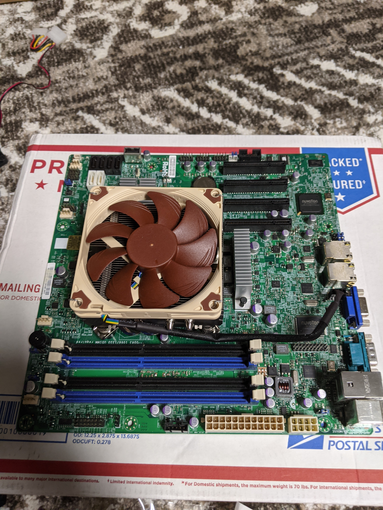
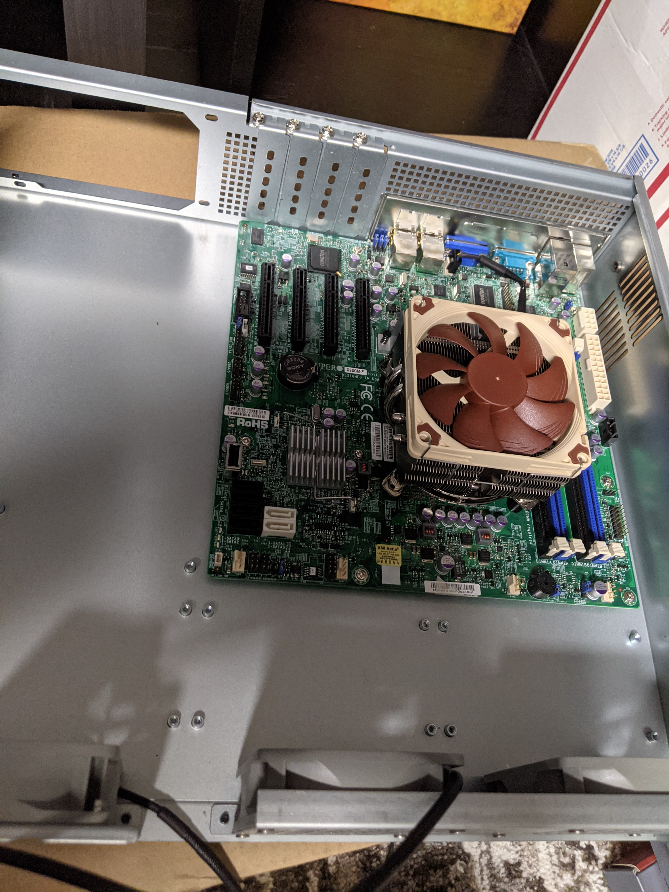
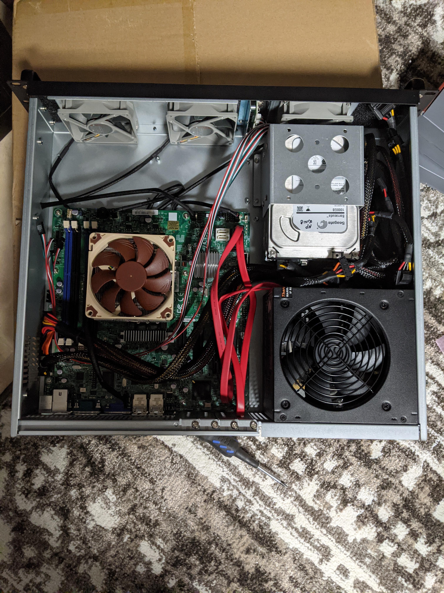
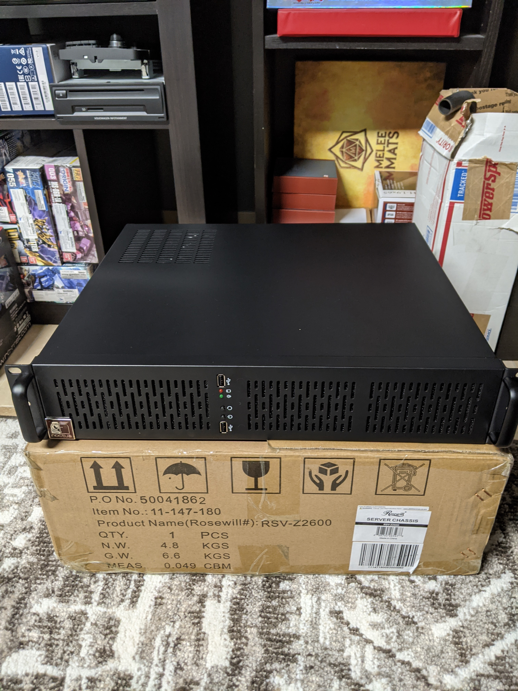

Personal NAS / Plex / E-book server - Part 2
Afternoon,
This is just an update for the server build, a majority of the parts had arrived, so I thought it was a good time to start building. The ram is the last thing missing, as it was shipped from Shenzhen China, so it will take a little bit longer to get here.
First, I started off with removing the crappy molex fans that were provided, and instead replace them with something much more quiter, some 80MM Noctua redux fans. This server was going to sit very close to me, so I wanted it to be as quiet as possible. Installation was pretty easy, just removing about 9 screws from the front panel to completely remove it.


Once installed, I went ahead and started prepping the motherboard for its install. I had placed the CPU inside, and attached the Noctua cooler. One small thing here, I did the measurements beforehand, but I don’t know how accurate I was. My hope was that the cooler would have about 5-10mm of clearance to the top of the case. But, I found a little bit conflicting information on forums on what CPU’s would fit. I was happy to find out that it fit just fine, and had just enough room to get some nice air going through it with no issue!


Next up, I wanted to get an idea of how much space this motherboard would take inside the case, and if I had to change up my solution. From what I understand, some manufacturers use very different standards for MITX boards, so they can be a lot wider or longer. Looking at it though, I should be able to at least squeeze in 1 more drive than anticipated, although I will have to wait for the RAM to get in to make sure I have clearance for all 5 drives. I won’t be filling those as of just yet, since this server won’t be the main NAS, but I did want plenty of space. Looking at it, I should have no problem, but of course I wanted to be sure.

Finally, I wanted to put everything inside. For the power supply, I had an old one laying around, but most likely I will replace this one in the future with something more efficient. For drives, I had 2 1 TB drives from an older computer that should work fine, they just require a wipe. I also do have my old SSD I want to use as a boot drive, just to make things a bit quicker, but you can’t see it as I have not installed it just yet. Cable management was kind of an issue in this case as expected, so I am going to take another passthrough with the wires to try and figure out a better solution. For now, while I wait for the ram, this is going to be how it sits.


Next up, once the RAM decides to arrive, I will be going through setting up my docker container with a couple services, and any sort of next plan I have. Now, normally with servers, I will usually name them to give distinction to either what they do, or a general theme. My last server I had with my friends, we named them after Norse gods, this time, I wanted to do greek gods. I have named this one Odysseus, partially because I just liked the name. Now, we wait for the RAM to arrive, and I can get this all setup and mounted!